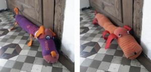

These pantyhose of my daughter. They only bust on one site so we gave them a new function. Dogs who are stopping the wind blowing under the door.



Pitch-chestnut. They fly perfect and with a goal you can make a competition.
Read more →
Hannah made her own design. Leafs of autumn with moon holes. They are moving with the wind.
Read more →

Because of the success with our first castle (post: juego sopla nubes) we did another one even bigger.
Read more →
With an apple and finger paint you have a beautiful wrapping paper.
Read more →
Octopus Little kids aren´t able to bead perls on a normal yarn but on wire .
Read more →